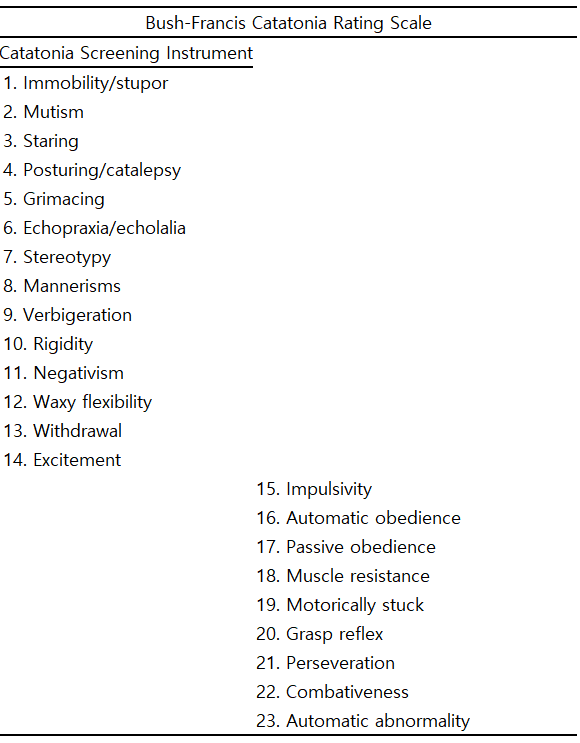

77 긴장증의 개념과 임상양상
78 개요
긴장증(catatonia)의 어원은 그리스어로 저하(down)를 의미하는 “kata”와 긴장(tension)을 의미하는 “tonas”가 결합하여 만들어졌다는 설과, “kata”의 다른 의미인 “완전히”가 긴장을 의미하는 동사 “tieno”와 결합하여 만들어졌다는 견해가 있다. 긴장증을 조현병 개념에 편입시킨 학자는 Kahlbaum으로, 그가 1874년 출간한 “Die Katatonie oder das Spannungsirresein ”라는 저서에서”Katatonie”라는 용어를 사용한다.
크레펠린이 조발성 치매 개념을 세울 때 Kahlbaum과 Hecker의 편집증, 긴장증, 파과증이라는 개념을 수용하여 종합하였기 때문에, 얼마 전까지만 해도 긴장증은 조현병의 한 아형 혹은 증상 중 하나로 이해되었다. 그러나 긴장증은 조현병에서만 관찰되는 현상은 아니며, 정신질환 뿐 아니라 몇몇 신체질환에서도 동반될 수 있다. DSM-5는 이러한 개념의 확장 및 변화를 받아들여, 긴장증은 더 이상 조현병의 한 아형이 아니라 다양한 질환에 덧붙여질 수 있는 명시자(specifier)로 자리잡게 되었다.[1]
그러나 여전히 의사들이 관심 밖에 있으며, 명확한 진단 기준에 대한 합의 조차 이루어지지 못하고 있다. 2017년까지의 자료를 메타 분석한 결과, 세계적으로 긴장증의 유병률은 10% 내외로 연도, 환자군, 진단체계 등에 따른 변화는 예상보다 크지 않은 것으로 나타났다. 그러나 현대에 가까워질수록 정신질환보다는 신체질환과 연관되어 고려되는 비율이 늘고, 조현병이나 우울증에 비해 양극성 장애에 동반되는 비율이 상승하고 있다.[2]
78.1 개념의 역사
78.1.1 Kahlbaum
Kahlbaum은 애초에 긴장증을 독립된 질환으로 보았으나, “Die Katatonie oder das Spannungsirresein ”라는 저서의 후반부에는”다양한 질병의 일시적인 단계 또는 복잡한 양상의 일부”로 나타날 수 있다고 하는 등 질병분류학적 위치에 대해 애매한 태도를 취했다. 그는 긴장증을 “우울, 조증, 혼미, 혼동, 궁극적으로는 치매가 순환하여 혹은 서로 교차하면서 나타나는 뇌의 질병”으로 기술하였으며, 이러한 정신증상 외에도 신경학적 운동 증상과 경련을 전형적인 증상에 포함시켜 기질성 질병과의 연결고리를 남겨두었다.[3] 그는 모두 26례의 긴장증 환자를 보고하였는데, 후대 학자들이 사례를 재분석한 결과 대부분 기질성 섬망 환자와 정신병적 우울 환자였다. 이렇게 보면 그가 제시한 증례와 그가 개념화한 독립된 질병으로서의 긴장증은 조금 동떨어져 있다고 하겠다.[4]
Kahlbaum이 제시한 진단 기준을 현대적 진단 기준에 적용시킨 학자들이 있다.[5] DSM 진단 기준에 딱 맞아떨어지지는 않았으나, 굳이 꼽자면 조현병 혹은 기분 장애에 해당되었다. Leonhard의 진단 기준을 적용하면 절반 이상이 순환형 정신병(cycloid psychosis), 특히 무동증적-운동과다적 운동성 정신병(akinetic-hyperkinetic motility psychosis)에 가장 가까웠다.
긴장증을 독립된 질병으로 자리매김하고자 했던 Kahlbaum 및 당대 학자들의 염원과는 달리, DSM의 도입 이후 긴장증이 독립된 질병으로서의 지위를 잃어가면서, 원인이나 임상 양상과는 무관하게 그저 특징적인 운동 증상이 보이면 어떤 진단에나 덧붙일 수 있는 비특이적인 개념으로 전락하였다.[6]
78.1.2 크레펠린
크레펠린은 1899년에 발간된 자신의 교과서 6판에서 긴장증을 조발성 치매의 한 아형으로 기술하였다. 그가 긴장증과 기분 장애의 관계보다는 조현병과의 관계를 더 부각시킨 것은 긴장증의 불량한 예후때문이었다. 크레펠린은 수백명에 달하는 긴장증 환자를 장기간 추적했는데, 관해율은 20%에 미치지 못했다. 크레펠린은 1908년에 출간한 7판 교과서에 이런 자료를 제시하면서, 거부증, 기이한 매너리즘, 상동증 등의 증상을 지속적으로 보이는 환자는 파과형 양상의 환자와 마찬가지로 불량한 예후를 보이기 때문에, 조발성 치매의 한 형태로 보아야 한다고 적었다. 그는 긴장증 증상이 기분 장애를 비롯한 다른 진단에서도 동반될 수는 있지만, 후자의 경우는 일시적인 현상에 그친다고 하였다. 크레펠린의 영향으로 말미암아 긴장증은 오랫동안 조현병의 한 아형에 머물게 되었다.[3] 현대의 학자들은 이러한 전통을 아쉬워하면서, 긴장증이 동반된 기분 장애가 긴장형 조현병으로 잘못 분류됨으로써, 역학, 생물학, 치료 등에 대한 연구가 왜곡되었을 가능성을 제기한다.[7]
78.1.3 크레펠린 이후
블로일러 역시 크레펠린과 마찬가지로 긴장증을 조현병의 아형으로 보고있었다. 그는 긴장증을 1차 증상 (4A 증상)에 대한 심인성 반응, 즉 2차 증상인 것으로 해석하였다.[6] 다만 “가장 집약적인 질병 과정의 표현”이기 때문에 긴장증을 보이는 조현병 환자는 예후가 불량하다고 하였다.
그러나 모든 당대 학자들이 긴장증을 조현병의 아형으로 낙인찍었던 것은 아니다. 긴장증의 예후를 부정적으로 본 크레펠린과 블로일러와는 달리, Hoch1는 기분 장애에서 발생하는 양호한 예후의 긴장증을 소개하였다. 그는 사후에 발간된 저서 “Benign Stupors: A Study of a New Manic-Depressive Reaction Type”에서 조현병과 연관된 “악성 긴장증”과 조울증에 동반된 “양성 혼미”를 구분하였다. 물론 크레펠린, 블로일러 전통을 따르던 학자들은 Hoch의 관찰을 상당히 거북한 시선으로 바라보았다.[8]
1 August Hoch (1868~1919): 스위스 태생의 미국 정신과 의사. 뉴욕 주립 정신병원의 소장을 역임하였다. 블로일러의 조현병 개념을 미국에 최초로 소개하였다. 저서로 “Benign Stupors: A Study of a New Manic-Depressive Reaction Type “을 남겼다.
또 다른 방향에서, 독일 정신과 의사인 Stauder2는 기존 문헌에서 급성 섬망, Bell의 조증(Bell’s mania), 섬망조증(delirious mania) 등의 이름으로 불리우던 긴장증 상태에서 갑자기 사망한 사례들을 모아 “악성 긴장증 (lethal catatonia)”이라고 이름붙였다.[10] 특징적으로 젊은 성인에게 급격하게 발생하고 심한 흥분을 보이다가 혼미에 빠지고 혼란과 함구증, 근 강직이 교차하다가, 결국 발열, 탈수, 심혈관 허탈로 사망에 이른다. Stauder는 이를 별개의 질병 단위로 보았으나, 현재는 기질적 원인으로 인한 긴장증 증후군으로 보는 것이 일반적이다. 그러나 원인과 관계없이 전기경련 치료를 통해 많은 이들이 목숨을 건졌고, 동시에 진단을 놓친 많은 환자들이 세상을 떠났다.[3,11]
2 Karl Heinz Stauder (1905~1969): 뮌헨에서 활동하였던 정신과 의사. 나치에 입당하는 것을 거부하여 잠시 의사 활동을 중단하기도 하였다. 1934년에 지나치게 흥분 상태에 있다가 사망에 이른 환자를 보고하였고, 이 상태는 “Stauder’s catatonia”로 알려지게 되었다.[9]
영미권의 학문적 흐름과는 차단된 채 구 동독을 중심으로 독자적으로 발전해 온 Wernicke-Kleist-Leonhard 학파(WKL 학파)는 내인성 정신증을 “체계적 조현병 (systematic schizophrenia),” “비체계적 조현병 (unsystematic schizophrenia)” 그리고 “순환 정신증 (cycloid psychosis)”으로 크게 구분한다. (1장 1-10절 참조article-01-01.html#wernicke-kleist-leonhard) WKL 체계에서 긴장증은 정신운동성 증상을 주로 보이는 정신증을 의미하는데, 이는 다시 순환형 정신병에 속하는 “운동성 정신병 (motility psychosis)”, 비체계적 조현병에 속하는”주기적 긴장증(periodic catatonia)“, 그리고 체계적 조현병에 속하는 “체계적 긴장증(systematic catatonia)”으로 나뉜다.[6] 운동성 정신병은 정상적인 운동과 양적 차이만을 보이며, 삽화적인 경과와 양호한 예후를 특징으로 한다. 이에 비해 주기적 긴장증과 체계적 긴장증은 예후가 불량한 편이다.[3]. 주기적 긴장증은 과다운동과 무동증이 뒤섞여 나타나고, 수시로 양상이 바뀌며, 기분의 변동, 망상과 환각이 간혹 동반되지만, 운동증상이 관해가 되면 자연히 소실된다. 이에 반해 체계적 긴장증은 서서히 시작되어 관해에 도달하지 못하고, 비가역적인 잔류기로 이어지는 만성 경과를 밟는다.
크레펠린과 Hoch는 서로 정반대되는 관점에서 긴장증을 바라보았고, WKL 체계는 이들을 한 체계 안에서 구분하고자 노력하였다. 개념이 조금씩 자리를 잡아가면서, 대체적으로 기분 장애와 연관된 일시적이면서 예후가 양호한 긴장증과, 조현병과 연관되면서 인경의 황폐화로 흐르는 긴장증이 서로 분리되는 모습을 보인다. 여기에 Stauder가 기술한 기질적 원인에 의한 긴장증이 합쳐지면서, 긴장증은 서로 계통이 다른 이질적인 질환을 통털어 부르는 용어가 되었다.
78.1.4 조현병에서의 긴장 증상
조현병에서 나타나는 긴장 증상 역시 급성기 환자에서 격하게 나타나는 긴장 증상과, 만성 퇴행 환자에서 나타나는 기이한(grotesque) 긴장 증상으로 구분될 수 있다. 항정신병 약물 개발 이전에는 20~30%의 조현병 환자가 긴장 증상을 나타내었다. 약물 도입 이후에는 긴장형의 비율이 급격히 줄어들었는데, 이렇게 격감한 원인이 약물의 우수한 치료 효과 때문만은 아닌 것 같다.[12] 우연인지 아닌지 동일한 시기에 히스테리 발작도 눈에 띄게 사라졌다. 아마도 항정신병 약물의 사용을 비롯하여, 탈원화 및 지역사회 내 재활치료의 증가, 조현병 진단 기준의 변화, 중추신경계 감염의 예방 및 치료법의 개선 등이 원인으로 작용했으리라 여겨진다.[13]
DSM-5 이전에는 긴장형 조현병(catatonic schizophrenia)이라 하여 조현병의 한 아형으로 구분되었는데, 그 비율은 전체 조현병 환자의 약 7~17%에 이른다고 한다.[14–16] 보통 한번이라도 뚜렷한 긴장 증상을 보이면 긴장형 조현병으로 분류하곤 하는데, 그렇다고 해서 재발할 때마다 긴장 증상을 보이는 것은 아니어서 진단적 안전성은 매우 낮은 편이다.[17]
긴장형 조현병의 남녀비는 확실하지 않으며, 다른 아형에 비해 일찍 발병하고[18], 정신병의 치료받지 않은 기간(DUP)이 짧은데도 불구하고 예후가 나쁘며[19], 자살률이 높고[15], 가족 내 이환률이 다른 아형보다 높았다.[17]
그러나 긴장증이 조현병의 독립된 아형이라는 개념은 더 이상 받아들여지지 않고 있다. 이 개념의 원류인 크레펠린 역시 긴장 증상은 거의 모든 형태의 조현병에 동반될 수 있다고 하였다. 그저 질병의 단계에 따라, 현재 병세의 심각도나, 불안, 초조의 정도에 따라 두드러지게 나타날 수도 있고, 그렇지 않을 수도 있다. 따라서 긴장형 조현병을 생물학적으로 구분되는 아형으로 보아, 그 생물학적 기반을 찾으려는 연구는 결실을 맺기 어려울 것이다.[20]
78.1.5 DSM 에서의 개념의 변천
DSM-Ⅲ까지 긴장증은 조현병의 아형으로만 언급되었다. 그러다가 1970년대 중반에 들어서면서 긴장증을 조현병에 국한시키고 있는 DSM 체계에 대한 반박이 제기되기 시작하였다. 긴장증이 조현병보다 기분 장애에서 더 많이 관찰된다는 주장[21,22], 정신질환과 상관없는 신경계 질환이나 기타 신체질환에서 관찰된다는 주장 등이 힘을 얻었다.[23] 한편으로 긴장증은 항정신병 약물이 아니라 벤조디아제핀이나 바비튜레이트에 빠르게 반응하며, 전기경련 치료가 특히 효과적이라는 보고가 뒤를 이었다.[24] 오히려 항정신병 약물은 효과가 낮거나, 만에 하나 신경이완제 악성증후군을 오진한 경우 상태를 더욱 악화시킬 수도 있다.[25,26]
이에 따라 점점 더 긴장증을 조현병으로부터 분리시켜야 한다는 목소리가 높아졌다. DSM-IV는 과도기적으로 긴장형 조현병을 남겨두긴 했지만, “일반적 의학적 상태에 의한 긴장증적 장애”를 신설하였고 “긴장증 양상”이 양극성 장애와 주요우울장애의 명시자(specifier)로 추가되었다.
바야흐로 DSM-5에 이르면서, 조현병과 긴장증은 영영 작별을 고한다. 긴장형 조현병을 포함한 모든 조현병의 아형은 진단 기준에서 삭제되었으며, 긴장증 명시자가 추가될 수 있는 질환이 기존의 조현병/양극성 장애/주요우울장애 이외에도 단기 정신병적 장애, 조현형 장애, 조현정동장애, 물질로 유발된 정신병적 장애로 확대되었다. 마지막으로 기저의 원인을 쉽게 찾을 수 없는 환자군에 대해서는 “달리 특정되지 않은 긴장증(catatonia NOS)”라는 진단을 내리도록 하여, 원인을 찾아내기 전이라도 효과적인 치료를 개시할 수 있게 하였다.[1]
기존 진단과 독립적으로 긴장증을 독립된 질병 단위로 분류하자는 일부의 요구가 있었지만, DSM은 이를 받아들이지 않았다.[[27]; [7]]3 그 이유는 다음과 같다. 첫째, 장기적 경과에서 동반 질환(예를 들어 기분장애나 조현병)이 긴장증보다 진단적인 안정성이 높다. 둘째, 긴장증을 독립된 질병 단위로 분류할 경우 공존질환 유병률이 지나치게 높아질 수 있다. 셋째, 원 질환에 따라 같은 긴장증이라도 치료 반응이 조금씩 다르다. 넷째, 전술한 변경 만으로도 DSM-Ⅳ의 문제를 적절하게 바로잡을 수 있다.[1] 그럼에도 불구하고, “달리 특정되지 않은 긴장증”이 신설됨으로써 독립적 질병 단위에 가까워졌다. 따라서 “긴장 증상의 치료”가 아니라 “긴장증”의 치료라고 맥락을 달리하여 치료법을 연구할 필요가 있다.
3 Max Fink와 그의 제자들인 Michael Taylor, Richard Abrams는 1970년대 중반부터 긴장증을 조현병의 아형으로 분류하는데 반대해왔고, 90년대부터는 긴장증을 독자적인 진단 범주로 분류해야 한다고 꾸준히 주장해왔다. 이들은 이러한 견해를 담은 저서 “Rediscovering catatonia: the biography of a treatable syndrome”을 출간하기도 하였다.[28]
78.2 임상 양상 및 감별 진단
78.2.1 주요 증상
긴장증에 해당되는 증상에는 다양한 자율신경계, 정신운동, 행동의 이상이 포함된다. DSM-5에도 12가지 증상이 열거되어 있으며[29], WKL 체계에는 무려 57가지 증상이 포함되어 있다. 흔히 언급되는 긴장증의 주요 증상 중 DSM-5에 언급된 증상은 다음과 같으며, 강직증으로 진단하려면 이중 3개 이상이 있어야 한다.
강경증/강직증 (catalepsy): 특정 근육을 수축시킨 상태를 유지하며 전혀 움직이려 하지 않는 증상. 억지로 근육을 움직이려 하면 저항감을 보인다.
납굴증 (waxy flexibility): 검사자가 환자의 팔 다리를 구부려 특정한 자세로 가져다 놓으면, 팔 다리를 자연스레 떨어뜨리지 않고 고정된 상태 그대로 장시간 유지한다.
혼미 (stupor): 외견상 깨어 있으나 자발적으로 말이나 행동을 하지 않는 상태. 환자는 시선을 앞에 고정시키거나, 아무 것도 보지 못하는 듯한 태도를 취하지만, 실제로 의식이 저하되었다는 증거는 보이지 않는다.
흥분, 충동성: 아무 유발 자극 없이 갑작스럽게 부적절한 행동을 하고, 차후에도 이에 대해 설명하지 못한다.
함구증 (mutism): 의식은 온전하여 주위의 얘기를 듣고 있으나 입을 꼭 다물고, 검사자가 말을 걸어도 묵묵부답이다.
거부증 (negativism): 지시에 따르지 않을 뿐 아니라, 접근하려는 모든 시도에 능동적으로 저항하는 현상. 말만 하지않으면 함구증이라 하지만, 행동을 거부하면 거부증이라 한다. 행동을 하지 않는 것이 아니라 일부러 거부하는 것으로, 예를 들어 검사자가 팔다리를 한쪽으로 움직이려 하면 반대쪽으로 근육에 힘을 주거나, 이름을 부르면 고개를 돌린다.
자세 취하기 (posturing): 중력에 반하여 부자연스럽고 불편한 자세를 장시간 유지하는 증상. 심리적 베개(psychological pillow)가 여기에 해당한다.
매너리즘 (mannerism): 자발적이지만 별나고 과시적인 정해진 행동 패턴을 반복한다.
상동증 (stereotypy): 목적이 없는 행동을 반복한다. 그 중에서 의미가 불분명한 구절이나 문장을 반복하는 언어적 상동증을 음송증(verbigeration)이라고 한다.
얼굴 찡그리기 (grimacing)
반향언어 (echolalia): 면담자가 하는 말을 그대로 따라한다.
반향행동 (echopraxia): 면담자가 하는 말을 그대로 따라한다.
DSM-5에는 포함되지 않았지만 이외에도 다음과 같은 증상들이 흔히 강직증에 동반된다.
- Gegenhalten: 검사자와 동일한 힘으로 검사자의 행동에 저항하면서 현 자세를 유지하려고 한다.
- 보속증 (perseverance) : 반복해서 같은 주제로 돌아가거나 같은 행동을 반복한다.
- 자동적 순종 (automatic obedience): 검사자의 요구에 지나치게 협조하거나, 한번만 하면 될 동작을 여러 번 반복한다. 다음 두 가지 현상이 이에 해당된다.
Mitgehen: 검사자가 손가락 끝으로 살짝 밀기만 해도, 팔이나 몸 전체를 그쪽으로 움직인다.
Mitmachen: 검사자의 지시에 과도하게 협조하며, 때로는 그만 하라고 해도 계속하려 든다.
- 양가감정 (ambivalence): 검사자의 지시에 따를까 말까를 결정하지 못하고 우물쭈물하거나, 이랬다 저랬다 한다.
78.2.2 평가 도구
환자가 자신의 병력과 현증을 제대로 표현하지 못한다면, 환자와 함께 충분히 오랜 시간 동안 함께 지내면서 다양한 상황에서 환자가 어떻게 행동하고 반응하는 지를 관찰하여 진단을 내릴 수 밖에 없다. 전통적으로 만성 조현병 환자의 퇴행 정도를 판단할 때 그렇게 해왔으며, 긴장증을 평가할 때도 그렇게 할 수 밖에 없다. 그러나 이러한 방식은 효율적이지 못할 뿐더러, 연구 상황에서 객관성을 확보하기도 어렵고, 또 시간 경과에 따른 변화를 정량화하기도 어렵다. 일부 의사들은 긴장증의 한두 가지 특징적 증상만 확인하면, 진단이 어렵지 않다고 주장하기도 하지만, 그렇게 하다보면 놓치는 증상도 많아져서 전체적 임상 양상을 파악하기 힘들다. 따라서 짧은 시간 내에 보다 효율적으로 광범위한 증상군을 평가하기 위해 다양한 평가척도가 만들어졌다.[30]
78.2.2.1 Modified Rogers Scale Catatonic Subscale (MRS-C)
정신질환에 동반된 운동장애를 연구해왔던 Daniel Rogers는 긴장 증상이 추체외로 증상과 다르지 않다고 믿었다. 이 견해를 근거로 심각한 정신질환 환자의 운동 증상과 추체외로 증상 평가를 포괄적으로 평가하기 위해 Modified Rogers Scale (MRS)이 개발되었다.[31] MRS에는 긴장 증상과 추체외로 증상이 뒤섞여 있는데, 이후 긴장증 척도의 임상적 필요성이 부각되면서 MRS의 항목 중 추체외로 증상을 배제하여 MRS-C가 만들어졌다. MRS-C는 따로 척도가 있는 것이 아니라, MRS로 평가한 후 일부 항목을 빼고 새로 총점을 구하여 MRS-C 점수를 얻어낸다. Starkstein 등[32]은 MRS-C를 좀더 개선하여 Rogers Catatonia Scale (RCS)을 만들었으며, 이는 특히 우울증에 동반된 긴장 증상을 평가하기 위해 사용된다.
78.2.2.2 Bush-Francis Catatonia Rating Scale (BFCRS)

현재 가장 널리 알려졌고 보편적으로 사용되는 평가 도구는 1996년에 발표된 Bush-Francis Catatonia Rating Scale (BFCRS)이다.[33] BFCRS는 모두 문헌 고찰을 통해 선정한 23개의 문항으로 이루어져 있으며, 각 항목은 0~3점의 리커트 척도로 평가한다. 1번부터 14번까지의 문항은 Catatonia Screening Instrument라고 하여 선별을 위해 사용되는데, 14개 항목 중 2개 이상의 증상이 24시간 이상 지속되면 긴장증이 있다고 평가되며, 전체 23개의 문항을 모두 평가하여 합산한 총점을 긴장증의 심각도로 삼는다.
78.2.2.3 Northoff Catatonia Rating Scale (NCRS)
Northoff 등[34]은 단순히 기존 질환에 동반된 긴장 증상을 평가하기 보다는, 긴장증이라는 독립적 질병 단위에 대한 평가를 하고 싶어했다. 따라서 긴장증에 기분 증상이 거의 예외없이 동반된다는 전제하에, 운동/행동 증상에 기분 증상을 추가하여 평가척도를 만들었다.
78.2.2.4 Brauning Catatonia Rating Scale (BCRS)
BCRS의 개발자들은 Rogers의 입장과는 반대로, 긴장증은 추체외로 증상이나, 파킨슨 병을 비롯한 기타 신경학적 질환과는 감별되어야 한다고 믿었다.[35] 이를 위해 긴장증에 특이한 증상만을 골라내어 평가척도를 만들었으며, 45분에 이르는 반구조화된 면담을 통해 진단특이도를 높이고자 하였다. 그러나 워낙 긴 시간이 걸리는데다가 평가자가 고도로 숙달되어야 하기 때문에 현실성은 떨어진다.
78.2.2.5 Katatonia, Autism, Neuropsychiatric and Neuromovement Examination Rating Scale
이 척도는 긴장증과 자폐증이 공통된 병태 생리와 치료 반응을 보인다는 Leo Kanner의 관점에 따라 자폐증에서 발현되는 긴장증을 평가하기 위해 개발되었으며, 다른 발달장애의 평가에도 이용되고 있다.[36] 줄여서 Kanner Scale이라고도 부른다. 이 척도는 3부분으로 나뉘어 있는데, 첫 부분은 11가지 항목으로 구성된 선별 도구이다. 둘째 부분에서는 18항목을 0,2,4,6,8점으로 평정하고 셋째 부분에서는 상세하게 정의된 12가지 신경운동 검사를 하고 0~1점으로 평정한다.
78.2.3 감별 진단
긴장증의 감별에 있어서 가장 염두에 두어야 하는 것은 정신과 문제가 아닌 기질적 질환의 가능성이다. 기존에 치료받던 환자가 약물 부작용에 의해 유사 증상이 나타날 수도 있지만, 응급실 등에서 표면적으로 정신 질환과 유사하거나, 진단이 애매하다고 해서 긴장증 진단이 먼저 내려지는 경우가 있다. 어떤 학자들은 만약 긴장증이 강력히 의심된다면, 감별진단과 치료를 겸하여 로라제팜 1~2 mg을 정맥 주사한 후의 반응을 관찰할 것을 권한다 (lorazepam challenge test). 한두차례 시도 후에 증상이 50% 이상 감소한다면 긴장증이라 진단할 수 있다고 하는데, 절대적인 기준은 아니니 유의할 필요가 있다.[37]
Bhati 등은 흔히 감별진단 해야 할 질환을 표와 같이 제시한 바 있는데, 물론 이들 질환이 긴장증과 공존할 가능성도 강조하고 있다.[38]
| Diagnosis | Characteristics similar to catatonia | Distinctive characteristics |
| -------------------------------------------- | --------------------------------------------------------------------------------- | ----------------------------------------------------------------------------------------------------------------------------- |
| Non-catatonic stupor | Immobility, mutism, absence of response to stimuli | Clear precipitating cause (e.g., head trauma, anoxia, drug intoxication) |
| Encephalopathy | Acute onset, bizarre behaviour, altered mental | Typically occurs in the context of medical illness, reversible with treatment of underlying medical condition |
| state |
| Stroke | Acute onset, can present with immobility, | History of cerebrovacular disease, focal neurological signs, CT/MRI findings |
| mutism and/or altered mental state |
| Stiff-Person syndrome | Immobility, posturing | Stiffness and spasms precipitated by surprise |
| Parkinson’s disease | Immobility, altered mental state, comorbid mood disorder | Symptoms improved with dopamine agonists and anticholinergics, cogwheel rigidity |
| |
| Locked-in syndrome | Immobility, mutism | Complete paralysis with preserved vertical eye movements and blinking, associated with lesions in pons and cerebral peduncles |
| Malignant hyperthermia | Immobility, mutism, altered mental state, instability of autonomic nervous system | Hyperthermia secondary to inhalation anesthetics, autosomal dominant, diagnosed with muscle biopsy |
| |
| Epileptic state | Immobility, mutism, altered mental state, bizarre behaviours | Epileptiform activity by EEG |
| Autism | Mutism, immobility, echolalia, echopraxia | Chronic with onset at infancy or childhood |
| Obsessive-compulsive disorder (Severe forms) | Repetitive echophenomea, comorbid mood disorder | Anxiety, awareness of compulsive behavior |
| Elective mutism | Mutism | Possible underlying personality disorder or paranoia |
78.2.3.1 신경이완제 악성증후군
신경이완제 악성증후군(Neuroleptic Malignant Syndrome, NMS)을 긴장증으로 봐야 할 지는 의문이다. 긴장증에서는 실질적인 의식 저하가 없지만, NMS에서는 그야말로 의식이 저하된다. 그러나 근 강직과 더불어 함구증, 응시하기, 거부증, 강경증, 음송증, 반향현상 등 전형적 긴장 증상이 동반되기도 하여 겉으로만 보면 감별하기 어렵다. 전에는 그렇지 않던 조현병 환자가 갑자기 근육을 긴장하며 주위에 반응을 보이지 않으면 반드시 고려에 넣어야 한다. 순수한 강직증과의 감별점은 발열, 자율신경계 증상이 동반되며, ESR, CPK 상승 등 검사소견의 이상이 따른다는 것이다.
치료는 무엇보다 원인이 될 수 있는 항정신병 약물을 끊는 것이며, 도파민 효현제인 bromocriptine, amantadine, L-dopa 등을 사용한다. 그래도 반응이 없으면, 강직증의 치료와 마찬가지로 고용량의 벤조디아제핀이나 전기경련 치료를 시행한다.
78.2.3.2 세로토닌 증후군
선택적 세로토닌 재흡수 억제제(SSRI)를 고용량 사용하고 있다면 세로토닌 증후군(serotonin syndrome)을 고려해 볼 수 있다. 근 강직과 함께 강직증의 특징적인 증상이 나타날 수 있지만, 그 전에 심한 불안 증상이 선행하며, 피부 홍조, 체온/혈압 상승, 침흘림, 설사, 구토, 복통 등 위장관계를 침범하는 자율신경계 증상이 동반된다. 역시 치료는 원인이 되는 약물을 끊고 보존적 치료를 하는 것이다.
78.2.3.3 뇌전증
뇌전증의 한 형태로 긴장증이 나타날 수 있다 (epileptic catatonia). Kahlbaum이 기술한 사례에서도 경련 발작과 함께 나타난 긴장증 증례가 등장한다. 긴장증은 경련 발작 전, 도중, 이후 어느 시기에든 발생할 수 있다. 경련의 과거력, 신경학적/감염성/자가면역성 질환의 병력, 항경련제 또는 경련유발 약물의 사용, 중독이나 금단 경련을 유발할 수 있는 물질 남용 등이 있다면 경련을 의심할 수 있다.[39] 일부 신경과 의사는 발작기 긴장증(ictal catatonia)을 비경련성 간질지속증(non-convulsive status epilepticus)으로 보기도 한다.[40]
78.2.3.4 섬망
DSM-5에서는 만약 섬망 진단이 더 합당하다면 긴장증 진단은 내리지 않는 것으로 되어있다. 두 질환 사이에 증상이 겹치는 부분이 있지만, 긴장증에서는 운동 증상이 더 강조되는 반면, 섬망은 주의력과 의식 수준의 변동, 환각이 더 두드러진다. 저활동형 섬망(hypoactive delirium)은 함구증, 거부증이 특징적이며, 과활동형 섬망(hyperactive delirium)에서는 흥분과 충동성 등이 특징적인데, 이들 모두 강직증과 겹치는 증상들이다. 일부 학자들은 긴장증 진단을 내리려면 의식이 명료해야 한다는 암묵적인 전제만 완화한다면, 섬망 환자에서도 긴장증 진단을 내릴 수 있다고 주장한다.[41] 그러나 섬망과 긴장증은 치료 반응이 전혀 다르기 때문에 감별하려는 노력이 중요한 의미를 갖는다.[42]
78.2.3.5 조증
섬망성 조증(delirious mania)이란 요어에는 “섬망”이라는 단어가 들어있긴 하지만, 이는 흥분과 과활동성, 충동성을 특징으로 하는 긴장증을 말한다. 조증 삽화가 점차 심화되면서 섬망성 조증 상태에 이르는데, 환자는 지남력을 잃고, 이야기에 두서가 없으며, 목적도 없이 난폭한 행동을 보이며, 자지도 않고 먹지도 않는다. 말이 많아지는 시기와 함구증 시기가 교대하기도 하고, 거부증, 상동증, 얼굴찡그림, 기이한 자세, 반향현상 등 전형적인 긴장 증상도 나타난다. 가만히 두면 탈수와 전해질 불균형이 심해지면서, Stauder가 언급한 악성 긴장증(lethal catatonia)이 될 수 있기 때문에 서둘러 안정을 시켜야만 한다. 섣불리 항정신병 약물을 근육 주사했을 때 악화될 가능성이 있으며, 그보다는 벤조디아제핀 주사제를 쓰거나 전기경련 치료를 행한다.[43]
78.2.3.6 자폐증, 발달 장애
소아청소년에서 발생하는 긴장증은 발달 지연, 자폐 스펙트럼 장애와 관련이 있기 때문에 성인 환자보다 좀더 감별에 신경을 써야 한다. 소아청소년기의 긴장증은 드물지 않으며, Kahlbaum의 초기 증례에도 이러한 환자가 포함되어 있다. 소아청소년 정신과 외래 환자군에서 5%, 자폐 스펙트럼 장애에서는 12~17%로 보고되었다. [44,45] 증상은 성인과 비슷하나, 야뇨증 등 퇴행 증상 등이 흔히 나타난다.[46] 급성/일과성 양상 뿐 아니라 수주 내지 수개월 지속되는 만성 형태까지 다양하다. 15~26세의 환자 39명을 3.9년 동안 추적 조사했을 때 자살 등으로 인해 조기 사망할 위험이 60배 증가한다고 보고되었다.[47]
소아기 긴장증 환자의 20% 이상은 신체질환이 연관되어 있을 것으로 짐작된다. 전신성 홍반성 낭창, 항 NMDA 수용체 뇌염 등의 자가면역성 질환, 뇌전증, 약물 및 물질 사용, 선천적 대사성 질환 등 다양한 질환이 긴장증을 일으킬 수 있다.[48]
78.2.3.7 항 NMDA 수용체 뇌염
항-NMDA-수용체 뇌염(anti-NMDA receptor encephalitis)은 일종의 자가 면역 질환이다. 2005년 난소 기형종(teratoma)을 앓고 있으면서, 기억력 결함, 정신증상, 의식저하, 호흡 저하 등을 보이던 환자들에게서 항 NMDA 항체가 발견되면서 처음 소개되었다. 이후 종양과의 관련성 없이도 발생한다는 것이 알려졌으며, 급격한 정신 증상, 이상 행동, 강직증 등을 보이기 때문에 정신과 질환과 감별이 어렵다는 것이 세간의 주목을 끌었다. 우리나라에서도 긴장증으로 정신과에 입원하였던 환자가 항 NMDA 수용체 뇌염으로 진단된 사례가 보고되었다.[49]
78.2.3.8 심리적 외상에 대한 반응
소아청소년 환자 혹은 발달장애 환자가 심리적 충격을 받았을 때 긴장증 증상을 보일 수 있는 것처럼, 정상 성인 역시 감당할 수 없는 외상 이후 긴장증을 보일 수 있다.[50] 시리아 난민에게서 보고된 “체념 증후군 (resignation syndrome)”[51]과 우간다 내전 중에 보고된 “끄덕임 증후군 (nodding syndrome)”[52], 구 소련에서 이주한 스웨덴 어린이에게서 보고된 “전반적 거절 증후군 (pervasive refusal syndrome)”[53], 성폭력을 당한 여성이 근육이 굳어 움직이거나 소리를 지르지도 못하는 “긴장성 부동(tonic immobility)”[54] 등은 이러한 예로 제시되고 있다. 이러한 증후군이 저항할 힘이 없는 소아나 여성에게 주로 발생했다는 것은 심리적 원인을 시사한다. 고개 끄덕임 증후군을 보인 환자 중 일부는 로라제팜 투여로 증상이 소실되었다.[52]
78.3 치료
긴장증 환자는 원인과는 별개로 부동자세나 탈수, 영양 부족 등으로 인한 욕창, 심부정맥혈전증, 폐색전증, 발열, 감염, 요저류 및 요로 감염, 흡인성 폐렴, 전해질 불균형 등 이차적인 합병증의 위험이 높고 때로는 생명을 위협하기도 한다. 이를 교정하기 위해 정신과, 내과, 영양학자 등 다양한 직종의 통합된 노력이 요구되며, 코위삽관이나 정맥주사 등을 통한 적절한 수액 및 영양 공급, 도뇨관 삽입, 항응고제 처치 및 집중적인 간호 등이 제공되어야 한다.
78.3.1 약물치료
78.3.1.1 벤조디아제핀
1930년대에 sodium amobarbital을 이용한 면담이 효과적이었다는 보고[60] 이후 현재까지도 벤조디아제핀, 특히 로라제팜이 긴장증 치료의 1차 약물로 선택된다. 그러나 이는 의사들의 경험일뿐 긴장증에 대한 이중 맹검 임상 시험이 시도된적은 없다.[61]
진단을 겸하기 위해 시행하는 로라제팜 부하 검사에 반응을 보이면, 매 4-12시간마다 용량을 조절해가며 최대 1일 24mg 범위 내에서 반복 투여한다. 부하 검사할 때를 제외하고는 대부분 경구로 투여하며, 환자가 협조되지 않을 때는 근주, 정주 모두 가능하다. 주사제를 쓸 때는 과도한 진정 및 호흡 억제를 주의 깊게 관찰해야 한다. 하루만에 반응을 보이는 경우도 있지만 대개 늦어도 3~7일 내에는 반응을 보인다.[62,63] 정신질환 환자에서도 이보다 더 시간이 걸리는 수도 있긴 하지만, 치료 반응이 없다면 신경학적/신체적 가능성을 재조사 해보아야 한다. Lin 등[64]은 초기에 로라제팜 근주를 1~2 회 시도한 후 그래도 해소되지 않으면, 이후에는 디아제팜 10mg을 생리식염수 500ml에 희석하여 시간당 1.25mg의 속도로 투여하는 방법을 제시하였다. 실제 임상에서도 흔히 사용되는 전략이다.
물론 다른 벤조디아제핀을 사용해도 되는데, 로라제팜이 선호되는 것은 전통과 교육 탓이다. 실제로 로라제팜이 다른 약물에 비해 더 효과적인지는 연구조차 행해진 바가 없다. 벤조디아제핀을 언제까지 사용할지에 대해서는 아직 확실한 지침이 없다. 로라제팜 투여를 중단할 때마다 긴장증이 재발했다는 증례 보고도 있다.[65,66]
벤조디아제핀은 일시적인 긴장증에 대해서는 효과가 뛰어나지만, 만성화된 긴장형 조현병에 대해서는 효과를 기대하기 힘들다. 긴장증이 발생한지 얼마 안 되는 조현병 환자에서도 보고된 반응율은 2%에서 47% 정도로 격차가 크며, 만성 퇴행성 환자에서는 거의 반응이 없다.[64,67]
졸피뎀은 90년대 부터 이미 긴장증 감별을 위한 검사로서 이용되어 왔지만, 장기적으로 사용되는 경우는 거의 없다.[68] 하지만 벤조디아제핀과 달리 호흡 억제의 부작용이 없고, 드물지만 탈억제로 인한 증상 악화의 가능성이 떨어진다는 점에서 고용량의 로파제팜 대신 사용되기도 한다.[69]
78.3.1.2 항정신병 약물 및 기타 약물
긴장형 조현병, 특히 만성 긴장 증상을 보이는 환자에게 벤조디아제핀이 효과가 없다면, 어쩔 수 없이 항정신병 약물에 기댈 수 밖에 없다. 긴장증 환자에게 항정신병 약물 특히 주사제를 고용량 투여하면 악성 긴장증 위험이 높아지기 때문에, 정형 약물을 투여하기는 부담스럽다. 이 때문에 클로자핀과 아리피프라졸에 대해 꽤 많은 연구가 이루어졌다.[70,71] 아리피프라졸은 조현병 뿐 아니라 우울증에 동반된 긴장 증상에도 효과가 있다고 한다.[72] 클로자핀은 주로 만성 긴장형 조현병에 사용하여 성공적이었다는 증례가 보고되고 있다.[73,74] 그러나 오히려 더 문제가 되는 것은 오랜동안 클로자핀을 사용하던 환자가 갑자기 약을 중단했을 때 나타나는 금단성 긴장증(withdrawal catatonia)이다.[75] 다른 항정신병 약물도 드물게 금단 후 긴장증이 나타나긴 하나, 클로자핀 처럼 중단한 지 2주 내에 급격하게 나타나는 경우는 드물다. 이 경우 클로자핀을 다시 투여하면 긴장증은 즉시 해소된다.
이외에 실험적인 약물로는 NMDA 수용체 길항제인 amantadine과 memantine이 있다. 특히 amantadine은 도파민 활성을 증가시키고 정맥주사가 가능하다는 점에서 간혹 사용된다. 2016년까지 amantadine을 사용한 증례는 18례 보고되었으며 대부분 긍정적인 결과를 보였다.[76,77]
78.3.2 전기경련 치료
전기경련요법은 벤조디아제핀에 반응을 보이지 않거나, 악성 긴장증 등으로 진전하여 시간적 여유가 없을 때 사용될 수 있다. 더불어 신체질환이 있거나 노인, 임신부여서 약물 치료가 불가능할 때도 고려해볼 수 있다. 정신과 병력이 뚜렷하고, 신경학적/신체적 질환이 완전히 배제된 경우에는 적극 고려해볼 필요가 있지만, 정신과 질환 이외의 다른 가능성이 배제되지 못한 경우 전기경련 치료를 하는 것은 쉬운 결정이 아니다. 뇌압이 높아져있다던가, 뇌내 신생물의 존재, 뇌동맥류, 뇌졸중의 과거력, 심근경색 병력, 고혈압 등은 전기경련 치료를 피해야 하는 사항이다. 따라서 섬망과 긴장증의 감별이 중요하며, 전자에 가깝다면 전기경련 치료는 우선 순위에서 멀어진다. 물론 항정신병 약물 악성 증후군이나, 장기간 지속되는 섬망에도 전기경련 치료가 효과적이었다는 보고가 있기 때문에 절대적인 금기 사항은 아니다.[78,79]
전기경련 치료는 급성 긴장증 환자의 80~100%에서 반응을 이끌어내며[80], 기저 정신질환의 종류와 관계없이 가장 효과적인 치료법이다.[29] 흔히 1회 또는 수 회 실시로 증상이 좋아지지만, 더욱 장기간의 치료 혹은 유지 치료가 필요할 수도 있다. 대체로 2~3일에 한번 정도로 시행하지만, 심한 긴장증 또는 악성 긴장증은 3-4일에 걸쳐 매일 실시해야 할 수도 있다.[76]
급성 긴장증뿐 아니라 긴장형 조현병 환자의 치료에도 역시 우수한 효과를 보이며[81], 오히려 다른 아형의 조현병 환자보다 더 반응이 좋다고 한다.[82,83] 만성 경과를 밟아온 긴장형 조현병 환자에게도 효과적일 수 있으나, 이 경우 치료를 중단하면 상당수가 재발한다.[84,85]
벤조디아제핀은 경련의 역치를 높이고 지속 시간을 단축시키기 때문에, 전기경련 치료를 할 때는 감량 혹은 중단하는 것이 원칙이다.[80] 그러나 함께 병용투여 하는 것이 더 효과적이라는 주장도 있다. 기분장애 환자 40명과 정신병 환자 17명의 의무 기록을 검토한 후향적 연구에서 전기경련 치료와 벤조디아제핀 병용은 모든 환자에게 효과가 있었다.[86] 그렇다 하더라도 적어도 전기경련 치료 12시간 전후에는 벤조디아제핀을 사용하지 않으며, 불가피한 경우에는 작용시간이 짧은 로라제팜을 사용한다.
78.3.3 경두개 자기자극술과 경두개 직류자극술
경두개 자기자극술(rTMS)와 경두개 직류자극술(tDCS)은 비침습적이면서 치료가 간편하여, 전기경련 치료를 대신하여 조금씩 영역을 넓혀가고 있는 치료법이다. 아직은 주로 기분 장애 환자의 치료에 많이 사용되지만, 실험적인 의사들이 강직증 환자에게 사용하여 긍정적인 결과를 얻어낸 바가 있다. 벤조디아제핀에 반응하지 않지만, 여타의 이유때문에 전기경련 치료를 하기 어려운 경우, 혹은 재발 방지를 위해 반복적인 치료가 필요한 경우에는 rTMS와 tDCS를 고려해볼 수 있다.[87]